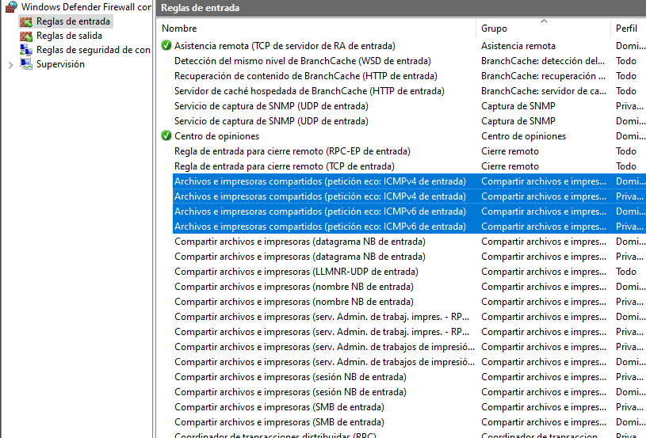
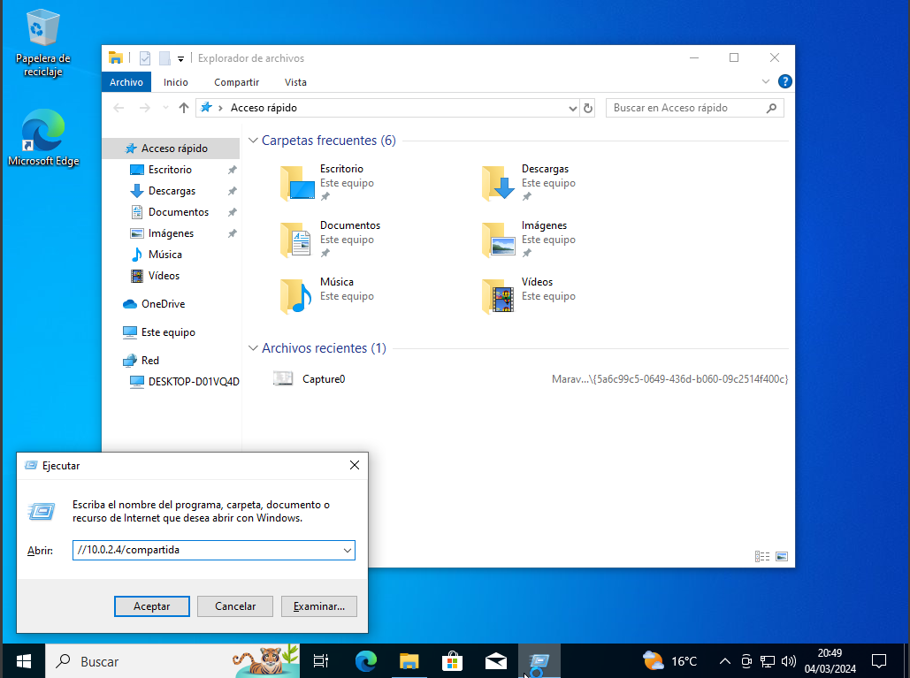
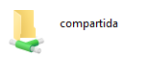

Configuración de Windows
Vamos a configurar windows para que sea visible desde otros dispositivos y vamos a habilitar las reglas de Archivos e impresoras compartidos.
Para empezar entraremos en la configuracion avanzada del firewall de Windows y vamos a activar todas las reglas de "Archivos e impresoras compartidos."
Y seguidamente vamos a abrir "Ejecutar" o "Windows + R" y vamos a introducir: //iplinux//compartida


Y posteriormente nos debera salir una ventana del explorador de archivos que mostrara nuestra carpeta asi:
